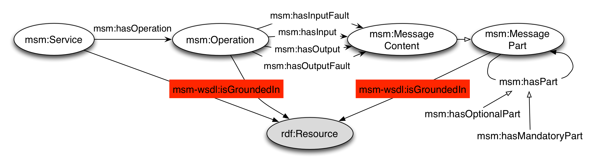

The essence of the approach followed by iServe is the use of import mechanisms for a wide range of existing service description formalisms to automatically transform and expose service descriptions as Linked Data. Once transformed, the resulting service descriptions, which we refer to as Linked Services, are expressed in terms of a simple RDFS model, Minimal Service Model (MSM), which essentially captures the intersection of existing service description formalisms so as to smooth away the heterogeneity of services and SWS formalisms.
In a nutshell, MSM is a simple RDF(S) integration ontology based on the principle of minimal ontological commitment; it captures the maximum common denominator between existing conceptual models for services. Thus, MSM does not aim to be yet another service model to bring further heterogeneity to the services landscape; it is instead an integration model at the intersection of existing formalisms, able to capture the core semantics of both Web services and Web APIs in a common model, homogeneously supporting publication and discovery.
Minimal Service Model, denoted by the msm namespace in the Figure below, defines Services which have a number of Operations. Operations in turn have input, output and fault MessageContent descriptions. MessageContent may be composed of mandatory or optional MessageParts.

Driven by Semantic Web best practices, MSM builds upon existing vocabularies, namely SAWSDL, WSMO-Lite, hRESTS, MSM WSDL, DC Terms, and FOAF depicted in the figures using the sawsdl, wl, hr, dc, and foaf namespaces respectively.
The SAWSDL vocabulary provides three properties, namely modelReference, liftingSchemaMapping and loweringSchemaMapping. These properties enable one to link existing descriptions to semantic models (modelReference) as to scripts able to transform diverse serialisations into their semantic counter part and vice versa.
The WSMO-Lite vocabulary completes MSM by providing classes for describing the main service semantics and by supplying type information to the generic model references. In particular, WSMO-Lite captures non-functional semantics through the concept of NonfunctionalParameter, and functional semantics via the concepts Condition, Effect, and FunctionalClassificationRoot.
hRESTS on the other hand provides basic support for capturing grounding information necessary for Web APIs. This vocabulary, see Figure below, therefore covers aspects such as URL templates, HTTP methods used, etc.

MSM-WSDL provides one simple property, isGroundedIn, which enables us to capture the grounding of elements of a service description, e.g., an operation, into the actual WSDL element that defines it. This property essentially enables us back and forth navigation from iServe's descriptions into WSDL files as necessary to carry out invocation for example.
MSM-WSDL extension to cover grounding for WSDL services." />Finally, both DC Terms and FOAF provide general support to capture metadata such as a textual description, the creator of a service description, etc.
For convenience all RDF/S vocabularies used are included within the sources of iServe, see module iserve-commons-vocabulary. Additionally we provide herein information about versions, namespaces, and links to the vocabularies used for your reference.
| Vocabulary | Namespace | Link to Vocabulary |
|---|---|---|
| Minimal Service Model | msm | http://iserve.kmi.open.ac.uk/ns/msm |
| WSMO-Lite | wl | http://www.wsmo.org/ns/wsmo-lite |
| hRESTS | hr | http://iserve.kmi.open.ac.uk/ns/hrests |
| MSM-WSDL | msm-wsdl | http://iserve.kmi.open.ac.uk/ns/msm-wsdl |
| DC Terms | dc | http://purl.org/dc/elements/1.1/ |
| FOAF | foaf | http://xmlns.com/foaf/0.1/ |